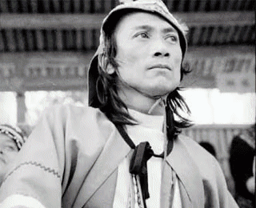
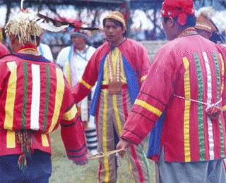
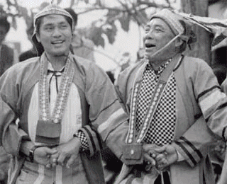
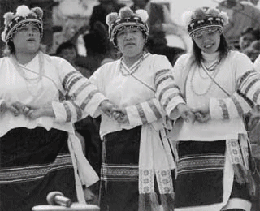

南部鄒族分為兩群，皆居住於高雄縣三民鄉，一為堪卡那福人，一為沙阿魯阿人，其中沙阿魯阿族人的貝神祭為南鄒族樂舞文化的代表。

南部鄒族指的是目前居住在高雄縣三民鄉楠梓仙溪上游一帶的民權與民生兩村境內的堪卡那福人（kanakanavu）、以及荖濃溪上游丘陵地帶桃源鄉的桃源與高中兩村的沙阿魯阿人（Lha '
alua）。其中，從堪卡那福人的遷移傳說可以得知，他們過去因為天災、敵族進逼以及尋找新獵場等原因而遷移到現居地，但最遲在清領時期已經定居於此；反觀其周圍的族群，如布農、排灣、沙阿魯阿、泰雅、北鄒與漢人等，絕大多數是日據時期以後遷入；然而如今三民鄉的布農族人人數已經超越堪卡那福族人。
沙阿魯阿人在清末文獻中被稱為頂四社（日人改稱上四社），因為該族由四個部落組成：雁爾社（kaluβbunga）、排剪社（pachiana）、美?社（β
ilanganu）、以及塔臘社（tararalhoβo）。和堪卡那福人一樣，沙阿魯阿人雖是原居於此的居民，但是在日據時期以後移入的布農、排灣、漢、平埔以及阿美族等，則使得桃源鄉今日呈為多元族群並存的局面。
南鄒的兩群，由於面臨複雜的族群生態，再加上經濟與社會變遷的影響，不論是語言或傳統文化都有融合的現象。由於堪卡那福族人的傳統歲時祭儀因小米種植的式微多半佚失，連帶影響到傳統樂舞的保存，因此僅以沙阿魯阿族人的貝神祭（miatungusu，或稱貝神祭）為例說明南鄒人的樂舞文化。
貝神祭是沙阿魯阿人一年中最盛大的祭典，祭儀中最重要的過程，是「聖貝薦酒」，須在室内關起門來舉行。

miatungusu 是沙阿魯阿人一年中最盛大的祭典，為期六天，過去每年舉行一次，後來因族人不堪祭儀消耗過大，改為兩到三年舉行一次。有關貝神祭的來由，與以下的傳說有關：
在族人從東方的 lhasunga
遷居至此以前，當地是矮人（kavurua）所住的地方，矮人有一種傳世的聖貝（takiaru），數目約有十幾個但無人能確定，聖貝被矮人視為是太祖之靈居住之所，因此矮人舉行大祭以求境內平安豐收、族人興旺。美?社的祖先離開
lhasunga
時，從矮人處得到了一些聖貝，遷居後就按著矮人的方式舉行貝神祭。而其餘的兩社（雁爾與排剪）看到後心生羨慕，趁美?社人不備之際偷了一些聖貝回去舉行貝神祭。但是為了不被美?社人發現，因此祭儀中最重要的一個過程「聖貝薦酒」（將聖貝浸泡在酒中觀其顏色變化，以看太祖是否酩酊大醉現出紅色）一定在室內關起門來舉行。
依照學者（衛惠林，1965；林曜同，2002）的紀錄，以及「原舞者」2003年甫演出的舞碼《迷霧中的貝神》，貝神祭的儀式分為以下幾個重點過程：
第一天：malalalangu 初祭
1. miatungusu：
約在凌晨三、四點左右舉行，由主祭（頭目）帶著所有男士至祭屋唱 malalalangu 初祭的儀式歌。
2. takuatunumu：
主祭領所有男士到各家汲酒與蒐集薪柴，集中在祭典場所以供 miatungusu 期間之用。
3. makini kuli'i：
祈求天神賜予獵物，由主祭口中念詞 o～i～atatvialingalui 四位男士輪著念詞，若有獸毛掉落於篩子內，則表示今年將有獵物豐收。
4. uapau：
鑽木取火，感謝祖先在洪水時代傳承取火方式予後代。
5. umai iapucucu'u：
此儀式分為兩段，第一天和第五天的數人數。主祭持大宣葉在眾人面前每逢一人就折一次，了解族裡人口與前年人口數比較，是否有增或減。
第二天：papapaci taruramu 刺豬祭
1. matatarua：
凡是進入男祭會所時，每人務必在樑上插一枝樹枝，表示你入席了。
2. malalalangu：
儀容確實做好不得差錯，否則對本身不利，malalalangu 期間要非常的投入不得分心、胡思亂想。
3. papapaci taruramu：
刺豬敬神分為兩個步驟：
a. 刺豬後唱出 taruramu hlasunguu 敬神，把豬頭割下來將豬頭掛在聚會所中樑柱上，一直掛到第五天。
b. 將豬剖腹把胃內的食糜取出約一碗，用山竽葉包起來，如有陽光儘速曬乾以備第三天之用。
第三天：ruapuhlu takiiaru 邀請貝神
ruapuhlu takiiaru 邀請貝神，主祭領唱 takiiaru hlasungu
一面把前日曬乾的食糜與酒渣放入竹筒製的酒造糟裡混攪，再從甕裡請出貝神，浸入酒渣裡浸泡，等貝神變紅表示已醉，這時趕緊把貝神取出放進清水洗淨後，取出並擦乾，才可以逗他們玩，此時不斷唱著
takiiaru hlasungu
。主祭把貝神放入布巾裡，拿在手上和一位公主，帶到祭場中間，準備把貝神拋向空中，讓男士們去爭搶，搶到的男士們儘快交回主祭並報出捉到幾個，主祭回應並祝福每位男士們，由於貝神有十二位，個個都有神福自稱，所以任何男士們捉到哪一位貝神那一年就得那一位神的祝福。接著主祭把十二位貝神包於布巾中，並放回甕裡再用布封好，男士輪舞之前，公主分藤圈於每一位男士，且不斷的唱
takiiaru hlasungu 開始輪舞跳躍，此儀式表示要團結。
第四天：capali capali 慰勞祭
1. capali capali：
主祭背著一個 hlungu 木臼，助祭扛著 sahlangu
竹筒，為了避免大家取物途中會有邪魔隨身，必須在入口處與出口處放四支茅草莖做避邪之用，主祭帶領男士至 palungu
家，在門外坐著等待，助祭進屋取蒸好的糯米飯放進木臼並汲酒倒在竹筒，男士舉箭於木臼做搗米狀，大家叫一聲 u—o……每人捏糯米飯給主祭吃，助祭再到一杯酒給 rahli
喝，表示尊敬與感謝主祭所賜的禮物。
2. kavuvuru：
征戰儀式，主祭帶領所有勇士在野外出草（征戰），為了突顯英勇事蹟，所以 hla'alua 祭屋旁邊設一處 cakuaru 專奉祭人頭屋，祭祀人頭。
3. matatarua：
獵寮插籤條，獵區宿址儀式，從前 hla'alua 男士上山時必須在山區設置個人的住寮獵區標記及路線，以免其鄰社侵犯狩獵區。當天早上
malalalangu 儀式完後，各自攜帶獵具、酒與肥肉由主祭帶領出發至各自獵區住寮，把酒和肥肉掛在柱上，午時準時回到聚會所。
第五天：pariia iihlicu 驅魔
1. pariia iihlicu：
驅魔儀式，主祭大喊著所有男士至祭儀場集合後，主祭率領大家帶著箭在部落四周大聲叫道 u…o…musalanacu…u…paliatatalalucuamu ihlamu
tangumiacuau puaiaili 男士向上空射箭，然後到各家四周牆壁上敲打，婦女拿火灰撒潑四周各處，儀式完畢後把道具收藏好，午時在會場大家聚一聚喝酒歡樂唱歌。
2. makuaru：
主祭左手握藜實 kuaru 到每個人的前面右手用拇指及食指捏幾粒藜實，先拿到自己口邊來，吹一口氣之後再把藜實放在每一個人的頭頂上咒祝：kani'ina
hlalanguta tangumiacuia macarumu（這是你的護身符，以後不要生病）。藜實 kuaru 有辟邪 ihlicu
的法力，從前各家在四周都有此種植物。
3. umaiapu cucu'u：
數人數儀式做最後的清點，主祭持大宣葉在眾人前面走一趟，每逢一人折一次，所折的的總數目，是要了解族人在六天祭期期間是否中途有事，臨時退出所做的特別清點。
第六天：takuahluahlupu 團獵
1. 早晨赴山上打獵，攜帶前日所殺的豬頭、豬肉，在山上食之。今天若有獵獲物，其獸頭將歸主祭所有。
2. mai papaugala
主祭所屬的 tama，hlahlasunga 系統，若有前年 miatungusu
祭以後出生的男孩時，必須背負他來，孩子在父親的協助下，手拉著手圍圓圈唱歌。主祭把獵獲的獵物頭用蔓草 Vuitsi 懸繫著，掛在每一個孩子的頭上 mai
papaugala 祝福。
3. 獵肉部分由眾人食之，其中獸乾 aui 用蔓草莖刺成串，插於主祭屋壁，以貢獻於聖貝。
4. 狩獵回來，部落族人共同於祭場中分享獸肉並歡樂唱 aiiana 歌解聖，結束為期六天的貝神祭期。
（資料來源：「原舞者」提供）
鄒族歌樂以對唱歌曲最顯著，南鄒音樂則以沙阿魯阿族的貝神祭最著名，貝神祭是由八首祭歌所組成。

南鄒歌樂與北鄒歌樂的共同歌樂以「對唱歌曲」為最顯著。北鄒稱 iyahaena，南鄒則稱 aiyan。此苗所用的語言大部份為南鄒 kanakanabu
群的語言，但其中有許多歌詞也無法用南鄒語言翻譯出來，說明南、北鄒兩個族群之密切關係。
沙阿魯阿族稱歌為「sahili」，唱歌為「pa-mu-a-sahli」。將歌樂分成祭典歌、童謠及對歌三種。祭典歌，包括八首屬於 miatungusu
的組曲，一首小米祭歌及一首獵歸祭歌，基本上是以神靈、祖靈及大自然為主要對象的祭祀歌曲；童謠乃針對靈魂不穩定的個體唱的歌曲；對歌則是人與人之間對唱的歌曲，是屬於成人穩定生靈之間所唱的歌曲。從此窺探出沙阿魯阿族個體以歌對應出的不同場域，呈現出「人
─ 浩瀚的神秘時空」、「人 ─ 不確定的靈魂」、「人 ─ 人」之間的層次。
南鄒音樂以沙阿魯阿族「貝神祭」（miatungnso）為最著名。在人口逐年減少。及夾在布農族與北鄒混居的處境下，語言、歌樂都在急速流失中。貝神祭是由八首祭歌所組成，其中包括：
1. luua likihli（山芋）
2. malalalanguu（準備歌）
3. miatungusu（舞歌）
4. hliialo lavahli（備好的山蘇）
5. palitavatavali（數人數之歌）
6. tahlukumai（男女對唱情歌）
7. varatuu vatuu（分開之歌）
8. tapisimu（男短裙）
（音樂欣賞資料：吳榮順製作、風潮出版之南鄒音樂CD）
貝神祭祭歌 (原舞者演出)
南鄒音樂以沙阿魯阿族「貝神祭」為最著名。貝神祭是由八首祭歌所組成，是以神靈、祖靈及大自然為主要對象的祭祀歌曲。
南鄒族在貝神祭的正典中，只限男性唱跳的戰舞，以莊嚴的步調進行，宴靈歌舞時則有女性加入，整體氣氛較為靈活多元。

儀式樂舞的順序結構與北鄒族人的戰祭頗有一致性：貝神祭的正典中只限男性唱跳的戰舞，以莊嚴的步調進行；宴靈歌舞時，則因女性的加入而整體氣氛較為靈活多元。然而沙阿魯阿族人的祭儀舞蹈的隊形與動作都與北鄒有著明顯的差異，或許與其長久和其他族群融合的生態之間不無關係：貝神祭中的舞蹈除了封閉與開口的圓形之外，亦有男女分排面對而舞的隊形；動作上除了前進的動作亦有北鄒族人少見的後退跳躍動作，不禁令人聯想起阿美族人的動作型態；而男女共通的交互點跳之腿步動作，則頗有南部排灣族群的風格。儘管如此，男女之間的性別區分以及長幼的階序關係在舞蹈中仍然明顯可見，亦可顯示鄒族人一貫的嚴謹倫理。
貝神祭舞蹈 (原舞者演出)
南鄒音樂以沙阿魯阿族「貝神祭」為最著名。貝神祭是由八首祭歌所組成，是以神靈、祖靈及大自然為主要對象的祭祀歌曲。